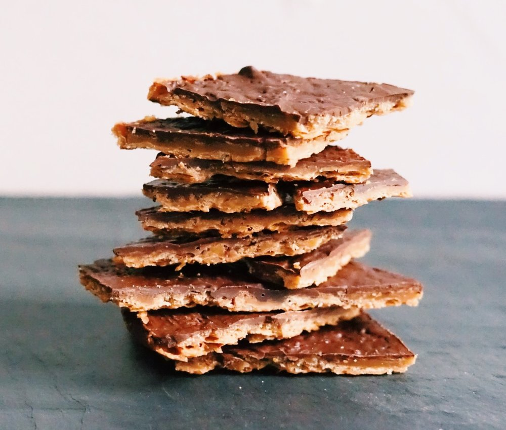

Trend 4
Matzah Crack
Personally, my favorite Jewish food twist is passover matzah crack. This is something my mom and I have been making for ages and I have recently seen it going around the internet. This is basically matzah, caramel, chocolate, and peanuts(optional). It is delicious and one of my favorite ways to add twist to matzah.